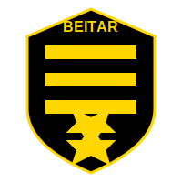
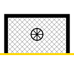
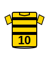
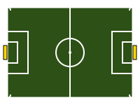
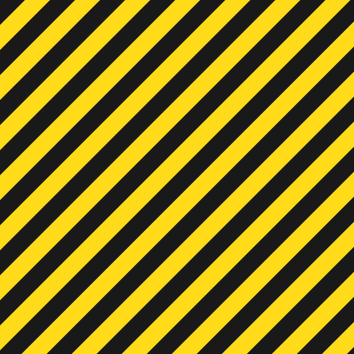

🏆 בית"ר ירושלים 🏆
גלריית תמונות - לומדים מספרים עם כדורגל
שחור
צהוב
🎨 תמונות אמיתיות - Beitar Jerusalem Real Images
לוגו מציאותי בית"ר
סמל הקבוצה המפורט עם מגן דוד, כתר והכיתוב בית"ר ירושלים EST. 1936
תג הקבוצה המפורט
תג רשמי עם פסים שחורים וצהובים, מגן דוד ושנת היסוד 1936

אצטדיון טדי
הבית של בית"ר ירושלים - מגרש, יציעים בצבעי הקבוצה ואווירה מדהימה
⚽ קריקטורות משחק כדורגל - Soccer Cartoons

שחקן בועט לשער
קריקטורה מצוירת של ילד בועט בכדור בחולצת בית"ר מספר 10

כדרור עם הכדור
שחקן צעיר מכדרר את הכדור בחולצת בית"ר מספר 7 - מלא אנרגיה!
🎯 אייקונים נוספים - Additional Icons
לוגו בית"ר ירושלים
סמל הקבוצה בצבעים השחור והצהוב המסורתיים
כדורגל
כדור בצבעי בית"ר - שחור וצהוב

שער
שער כדורגל עם רשת וכדור
גביע
גביע הזהב - סמל לניצחון ולהישגים

חולצת משחק
חולצת בית"ר עם פסים שחורים וצהובים

מגרש כדורגל
מגרש מלא עם כל הסימונים
כוכב הישגים
כוכב זהב לסימון נקודות ותשובות נכונות
שריקת שופט
שריקה למצב חידון ותחרויות
דגל פינה
דגל פינת מגרש בצבעי בית"ר

דוגמת רקע
פסים אלכסוניים שחורים וצהובים לרקע